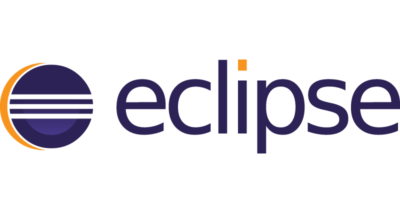

Eclipse - ABAP Development Tools

Neues ABAP Projekt erstellen
- ABAP Project: On-Premise System
- ABAP Cloud Project: SAP BTP ABAP Environment
Den Service Key zum ABAP Environment findet ihr in unserem Concluence.
Tipps und Tricks im Umgang mit Eclipse ADT
Perspectives
Das ADT Plugin bringt zwei wichtige Perspectives mit:
Windows
Weitere Windows können über den Menüpunkt: "Windows -> Show View -> Other" hinzugefügt werden, bspw.:
- Problems
- Outline
- Relaation Explorer
- Feed Reader (Short Dumps)
- Transport Organizer
- ABAP Language Help
- ABAP Unit
Project Explorer einrichten
- Favorite Packages
- Favorite Objects
- Released Objects
- Inactive Objects
- Eigene Pakete hinzufügen
Nützliche Shortcuts
| F2 |
Show Tooltip Description |
| F3 (oder STRG + Linksklick) |
Navigate to |
| STRG + E |
Quick Switch Editor |
| STRG + A |
Open ABAP Development Object |
| STRG + Shift + G |
ABAP Where-used List |
| STRG + 1 |
Quick Fix |
Hinweis: Viele der SAPGUI Shortcuts sind ebenfalls in Eclipse gültig!